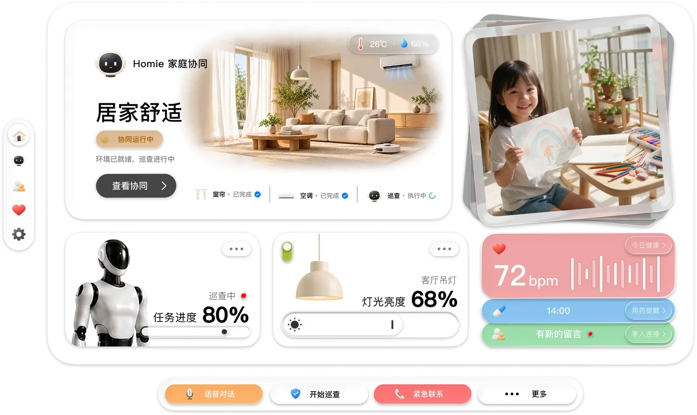
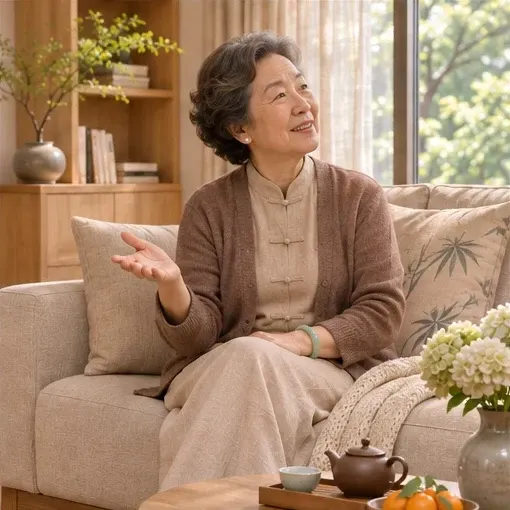
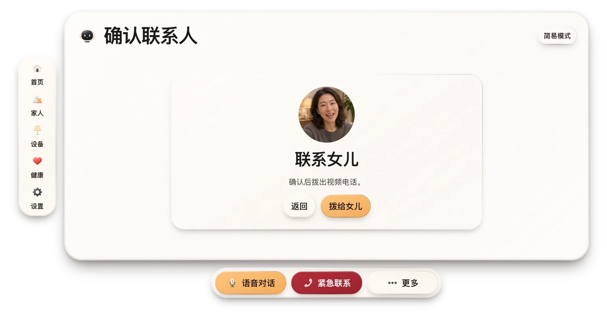
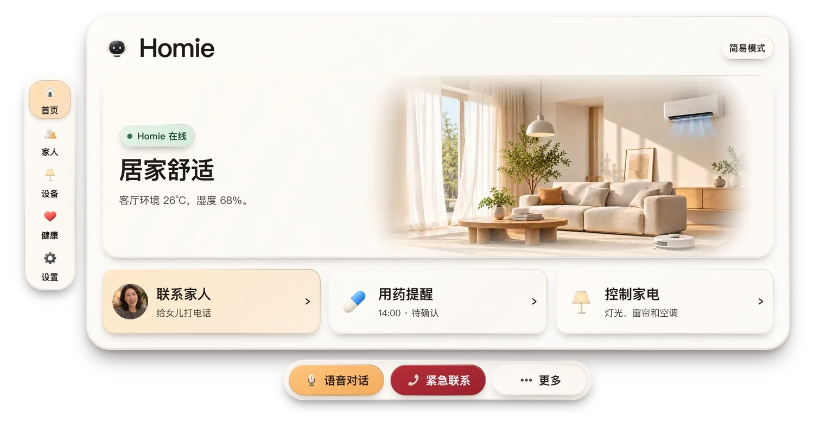
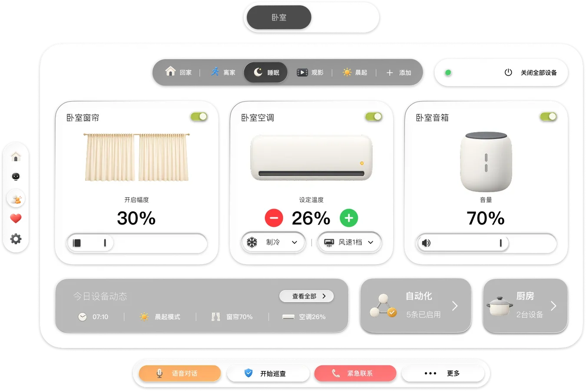
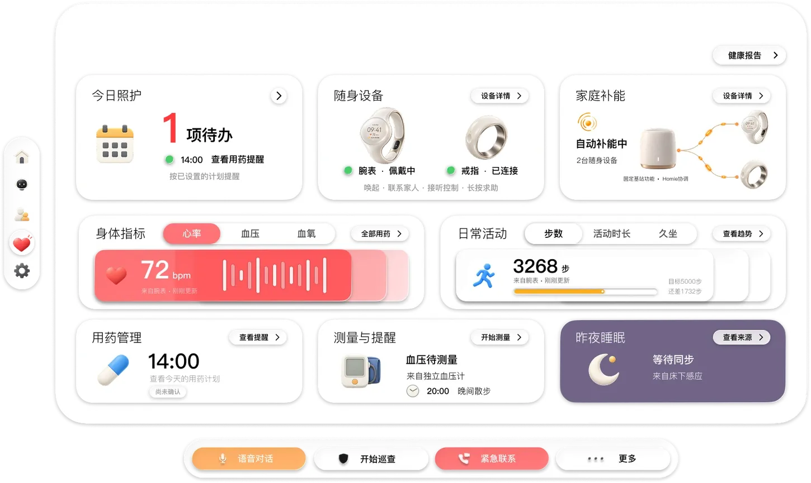
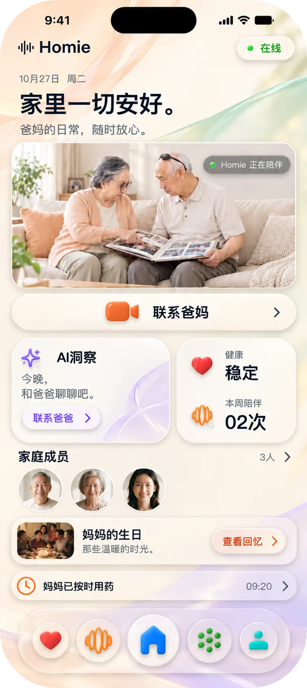
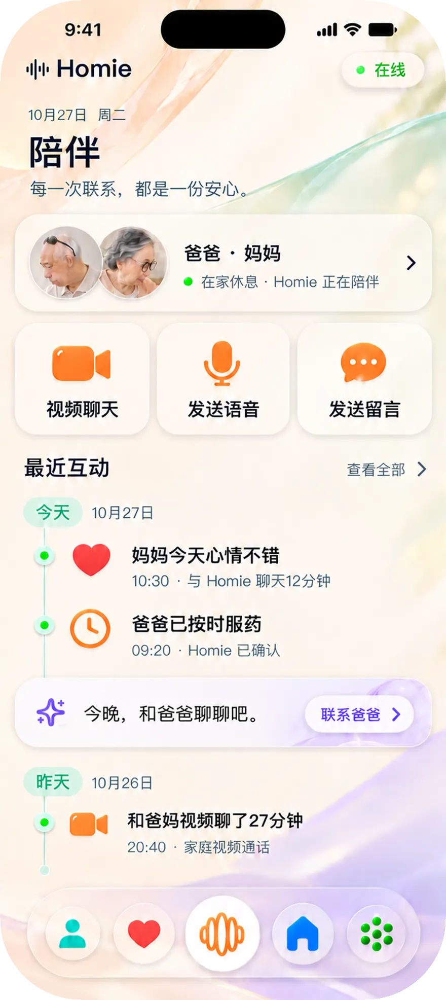
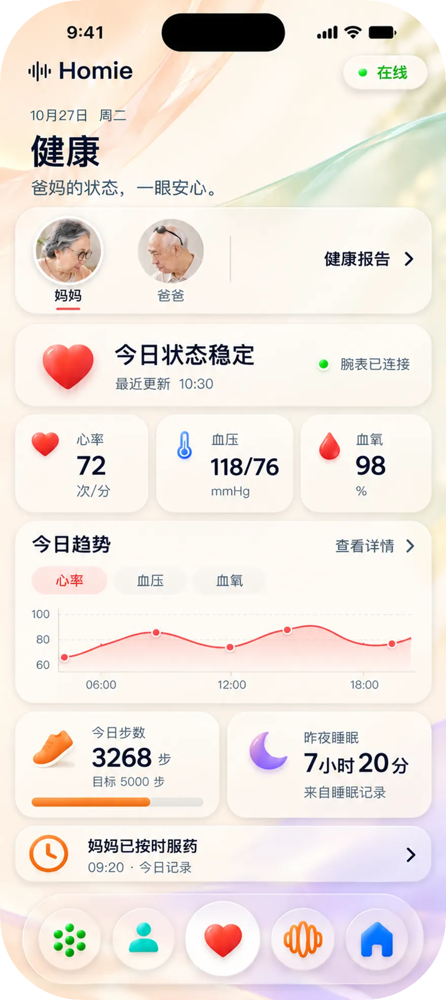
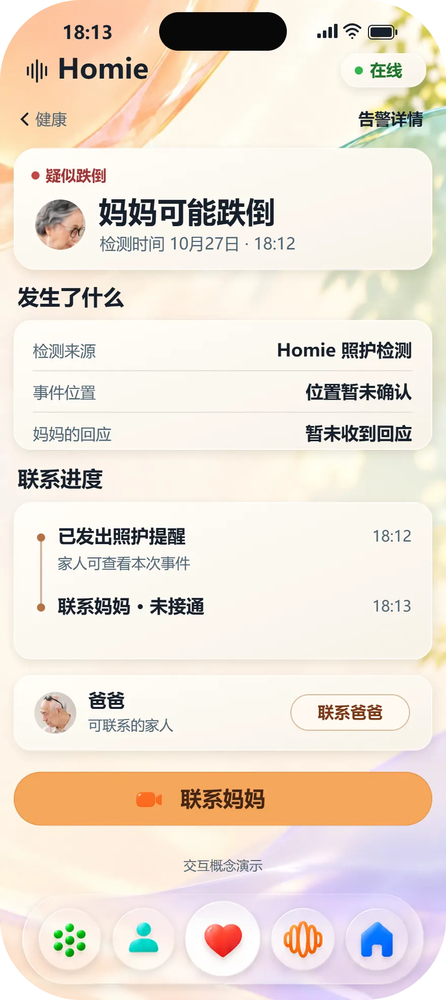

HOME COMPANION ROBOT
Homie
让关怀，走进日常。
从联系家人、日常提醒到家居控制，探索家庭照护机器人如何让老人看懂系统状态、确认关键操作，并在需要时自主退出。

会操作入口，不等于知道系统接下来会做什么。
Homie 是一个面向居家老人的家庭照护机器人概念。案例从两个日常任务出发：联系家人、调亮客厅灯。设计重点不是增加功能数量，而是让老人知道系统听懂了什么、即将做什么，以及如何取消。
原项目材料记录了两条访谈表匿名转述（表 2、12），并提及 105 份有效问卷；但本次提供的文件中没有原始问卷、题级样本量或完整访谈记录。因此这些内容只能作为原项目材料线索，不能作为本次独立核验的研究结论。
材料中的具体线索包括：老人担心拨错号码；智能音箱有时听不懂；家庭成员关注摄像头访问边界。这些线索共同指向一个设计问题：系统需要把识别结果、操作后果和退出方式讲清楚。

从一天里的照护时刻，找到系统应该出现的位置。
旅程从起床、用药、外出与归家、联系家人、晚餐到就寝。不是每个时刻都需要机器人介入；提醒、确认和退出都应由老人掌握。
日程提示提供今天要做的事，老人可选择稍后再看。
提示当前事项和时间；真实用药记录与确认机制仍待验证。
提醒查看随身设备；自动解锁属于概念联动，需验证识别与授权条件。
显示联系人，由老人确认是否拨出。
保留日常支持入口，不强行打断个人节奏。
睡前查看灯光和家居状态；夜间异常响应仍属待验证概念。

拨号前先认人：多一步确认，换来纠错机会。
同一句“帮我联系女儿”，可以直接拨出、打开联系人列表，或先展示识别到的联系人再确认。直接拨出步骤少，但识别错误时来电已经发出；列表适合对象不明确的情况；先确认联系人在明确识别时更容易兼顾效率与可纠正性。
问题 / 考量识别到女儿后立即发出来电邀请。
设计回应少一步，但错误对象可能已经收到来电。
问题 / 考量显示联系人，由老人查找并选择。
设计回应适合对象不明确或需要临时换人，但增加查找负担。
问题 / 考量展示称谓和头像，等待老人选择拨出或返回。
设计回应识别对象明确时保留纠正机会，是当前方案。

机器人、穿戴设备和家人手机，各自承担不同职责。
Homie 接住语音或手势请求并呈现状态；腕表提供随身提醒与确认入口；戒指提供快捷唤起；基站负责居家无线补能；家人手机接收邀请并自主决定是否接听。设备分工与跨端联动均为概念方案。
- 老人决定是否发起通话；家人决定是否接听。两端都保留自己的操作权。
- 通话中摄像头、麦克风状态与长期访问权限应分开处理。
- 智能家居必须返回执行结果；未收到设备回执时不能直接显示成功。


把成功、取消、无人接听和失败分别说清楚。
通话和留言不是一个简单的“完成/失败”状态。等待时取消应显示“已取消呼叫 / 电话未接通”；接通后结束才显示“通话已结束”。留言也需要区分录制、发送、收到和已听。
- 语音没听清：明确告诉老人需要重说，并保留可触及的替代入口。
- 正在呼叫：说明正在等待对方接听，并持续保留取消操作。
- 无人接听：可重新呼叫、留言或返回。
- 留言发送结果未知：先核对同一条留言，避免重复发送。
- 智能家居设备离线：保留原状态，明确告知未执行成功。
同一套服务，在老人端和家人端呈现不同的信息密度。
老人端优先显示当前任务、关键读数和主要操作；子女端用于回看家庭动态、陪伴互动和健康事件。两端的信息职责不同，不应把子女端的复杂信息直接复制到老人端。







概念方案已整理，真实使用与硬件能力仍需验证。
原项目页面记载老人端部分主流程曾做浏览器走查，但本次资料未附走查日志。子女端、留言恢复、语音/手势、投影硬件和跨设备联动仍需进一步验证。
- 已完成：家庭机器人概念、老人端投屏、子女端 APP、穿戴设备与补能基站的体验方案。
- 材料记载：老人端部分主流程有浏览器走查描述，但具体参与者、任务记录和结果未随本次资料提供。
- 待验证：真实老年用户的阅读距离、触控可达性、语音识别、取消理解、异常恢复和跨设备联动。
- 待补充：个人职责、项目周期、原始问卷与访谈记录、走查日志。
 维序 WEISU · 让每一次拣货差异，都有据可查、有人负责、有路可走。
维序 WEISU · 让每一次拣货差异，都有据可查、有人负责、有路可走。